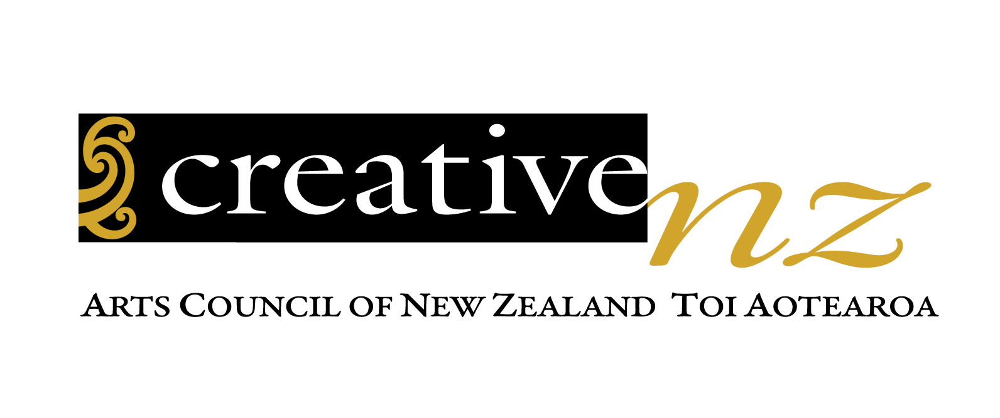
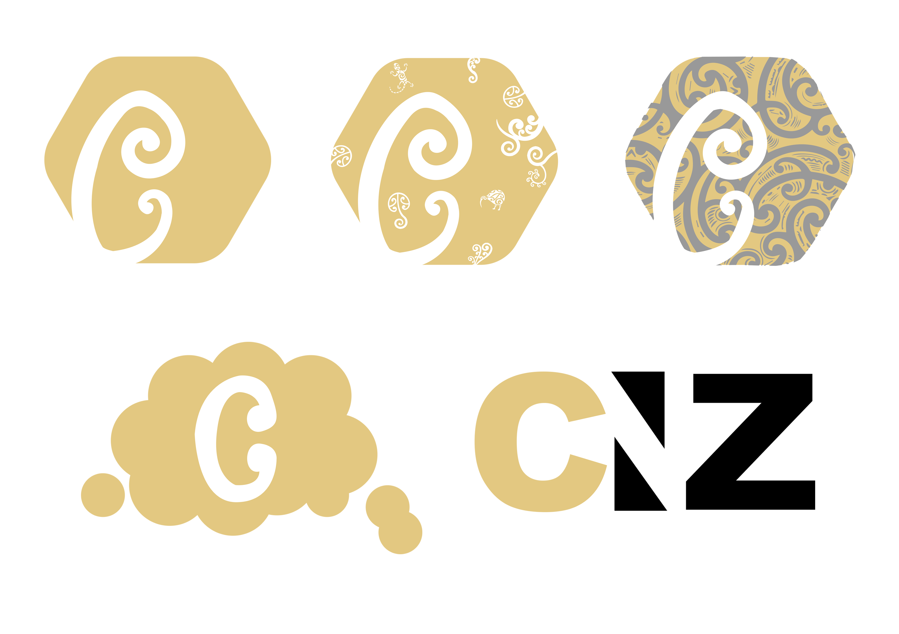
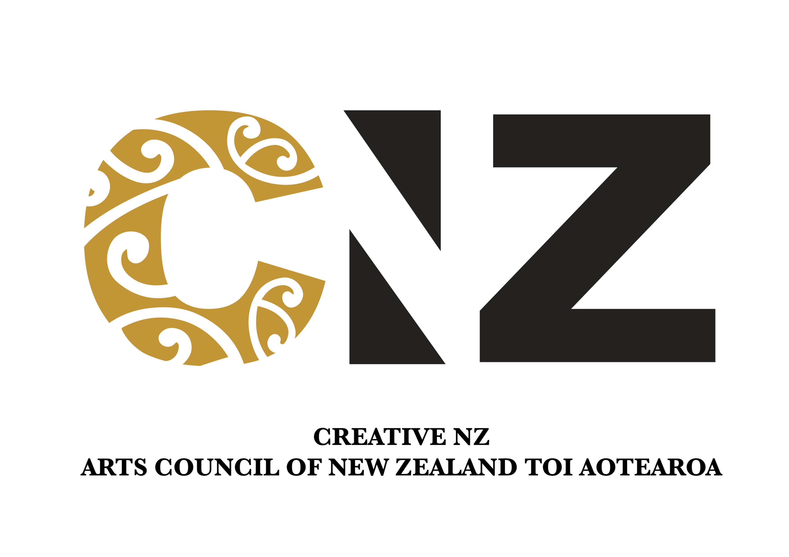

Creative New Zealand
This brief of re-designing a NZ logo was during my studies. It had a quick turn around of 8 hours and focused on speed. Being a dancer for many years, I thought of Creative NZ during my brainstorming stages. Concepts came quick as I knew their branding and background already. I decided to simplify and modernize the logo, giving it a bit more strength while keeping true to them, their Maori design influence and their colour palette. Also, so it can be used more like a watermark or icon if needed.
  